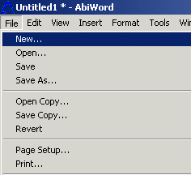
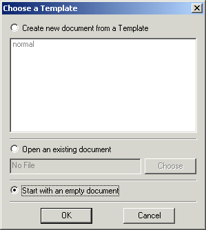
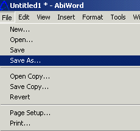
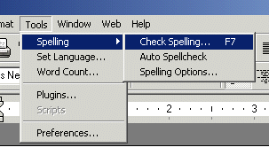
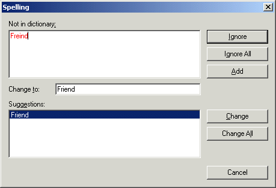
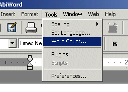
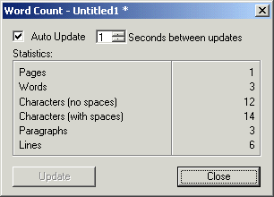

Welcome to of the task-orientated tutorial on how to use AbiWord Help to write a letter. As you go through the steps in this tutorial you will write your own personal letter as you learn the basic functions of this word processor. Below you'll notice that each function has been divided into an individual task for you to try. In addition to these functions you will learn the other functions in the processing two tutorials; Writing a Resume and Writing A Party Invitation. You can access any specific function you would like to learn that is not in this tutorial by selecting the function in the index located to the left side bar of this page. Once you have determined to whom you will write your letter, you are ready to jump into the task-oriented part of writing your letter. So let's begin to learn the functions of AbiWord while you write a letter.
You may choose any of the links below to go to that specific function in this tutorial.
Now have fun as you go through this tutorial!

Let's start creating your letter by opening a new document.
Select"File" and from the menu at the top of your screen.
Select"New" from the list. Note: this opens the choose a template window.
Select"Start with an empty document".

Select"OK" to open your new document.
Now that you have opened your new document you can start to type your letter.
Now that you have opened a new document you can begin to type your letter. One of the most common ways to start a letter is to begin with to whom you are typing your letter to. Below you will see an example from a student typing a letter to a professor.
For Example:
Dear Professor Harrison,
I am writing a resume and I would like to include a letter of recommendation from you for my diligent effort and hardwork in your class. I will be applying for a technical writing position with a Marketing Consulting Firm in New York. I can give you all the necessary information at a later date. Please let me know if you're willing to give me a letter of recommendation, for potential employer's. I plan on also having this letter on my personal website as well. Thank you for your time.
Sincerely,
Jessica
Now that you have opened your new document and typed your letter you are ready to learn how to save your letter.
Now that you have learned how to open a new document and typed your letter you'll need to learn how to save it. The steps below show you how to do this task.
Select "File"from the menu at the top of your screen.

Now select "Save as" from the drop down list.
Choose where to save your letter"Save in" some example of your choices are:"desk top, my documents, C drive or A drive".
Name your file in the "File Name" box. Be sure your file name has a ".doc extension on the end of it.
Select "Save as Type" and save it however you would like it saved from the drop down list.
Select the "Save" button at the bottom of the page.
Your letter is now saved, make sure you save your letter when ever you make any changes. You can do this by simply selecting the "save icon" represented as a, A disk, located on the tool bar.
Now that you have opened your new document, typed your letter and saved it, you need to be sure to use the spell check function to check for miss spelled words in your letter.
Now that you have opened your document, written your letter, and saved it, you are ready to use the spell check function to search for misspelled words.
Select "Tools" on the menu.
Select "Spelling",and then choose "Check Spelling", see the image below.

At this point a spell check box will open up with your misspelled word in red, as well as a suggestion box with options you can choose from to replace your misspelled word.

Choose on one of the following options: "change, all, ignore or ignore all, add or cancel".
If at any point during your spell check you decide to exit the spell check function simply choose the "Cancel" button to exit the spell check screen.
Now you have learned the key functions of opening and saving and spell checking your document, you are ready to move on to some functions that are options for you to use in your letter, such as word count, page numbering and date and time.
So far you have learned the basic functions of this program such as opening a new document, saving a document and spell checking a document. For many of you some of your documents will need to be a specific amount of word. In this step you'll learn just how to determine how many words are in your letter.
Select "Tools" from menu.

Select"Word Count" from the list.
Note: a box will open which will display how many "words, pages, paragraphs, lines, characters with and without spaces" are in your letter.

Now that you know how many words are in your letter. You are ready to learn how to number your pages of your letter.
You're doing great, keep up the good work!
If you have more than one page and you want to number your pages. Then pay attention because this step will teach you how to do just that.
Select "Insert" from the menu.

Select "Page Number" from the drop down list.
Note: In this box you can adjust where you want the page number to show up on your document.
Open the drop down box underneath the word "Position".
Select either "Header" (top) or "Footer" (bottom)
Select "Alignment" to adjust where you want the page number to be located on your page.
Select "Right","Left" or "Center", this will place the page number in one of the three areas.
Be sure to "Preview the page before you select OK.

Select the "OK" button.
Nowq you will notice page numbers on your document. However if at anytime during the process of numbering your pages you want to exit this function click the "Cancel" button to go back to your document and no page number will be assigned to your letter.
Numbering pages is important if you have more than one page to your document, also having a time and date on your letter can be helpful as well.
The next step in creating your document is to implement the date and time function into your document.
Select "Insert" located on the menu at the top of the screen.
Select "Date and Time" from the list.

Choose from one of the "available formats" from the list.
Select the "OK" button.

At this point you should see the date and time that you choose displayed on your letter.
Now that you have completed the above six steps in this lesson as well as typed your letter. You're ready to Print your document to see how it looks.
Congratulations you have now completed all the basic functions you need to know to write a letter. And I bet you're ready to print out that wonderful document you typed, so it can be sent in the mail to whom ever you are writing it to, or you may simply want to print it to save a hard copy in a file, or to proofread it. Whatever the case maybe below you will find out to how print your letter.
Select "File" from the menu.

Select"Print" from the list.

You can choose how many pages you would like to print of your letter, or choose what page you would like to print. Either way make your selection in this box
Select "OK".
If you like how your document printed and are done using this program. You can close your document. But first remember to save your document again if you would like to keep a copy of it on your computer.
Congratulations! You have just completed the first tutorial, and hopefully you have typed a nice letter in the process of learning the basic functions of AbiWord Help.
Select "File" from the Menu.
Select the "Close" button.
Note: if you would like to learn more key functions of the program then check out the next tutorials, "Writing a Resume and Writing a Party Invitation". Or you can simply select any function you would like to learn by choosing it on the left side of this page under index.
You're on your way,keep up the great work!